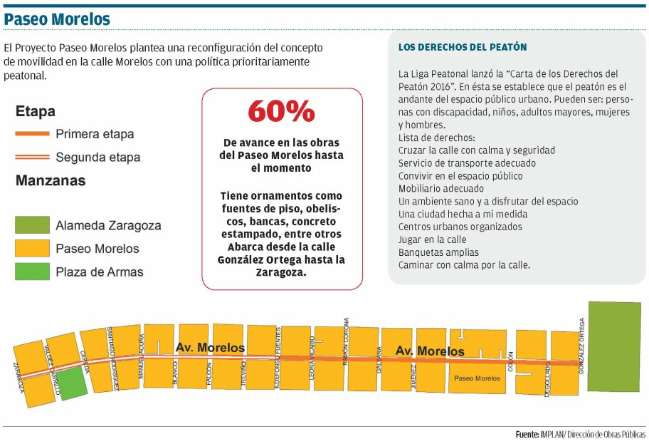

En la actualidad el centro de Torreón está prácticamente despoblado, el primer cuadro de la ciudad cuenta aproximadamente con 30 habitantes por hectárea, cuando la Organización de las Naciones Unidas (ONU) recomienda un índice de 150 habitantes por hectárea en cualquier metrópoli.
De acuerdo con el proyecto piloto "Conteo Peatonal del Centro Histórico de Torreón: la Plaza de Armas y el Mercado Juárez", realizado por el IMPLAN en 2015, se puede estimar que cada día circulan más de 3,000 peatones en la Plaza de Armas y el Mercado Juárez.
Otro dato importante es que en Torreón, según el INEGI, 12.6 % de la población son peatones de 12 a 65 años de edad que realizan traslados a pie con motivo de estudios o trabajo. Se trata de un porcentaje de la población considerable.
Hay estudios afirman que el tráfico peatonal aumenta las ventas en sectores comerciales adyacentes. Además, la peatonalización propone contar con un microsistema de ciudad interconectado al sistema de espacio público urbano y municipal, que permita disfrutar del centro de manera funcional e invite a su población a recorrerlo de forma más cómoda y segura.
La peatonalización es una técnica muy antigua, casi tanto como la presencia numerosa de automóviles en las ciudades. Ante su importancia, hay estrategias que se dedican a resolver puntualmente el conflicto entre peatones y vehículos y otras que buscan un nuevo modelo de accesibilidad y movilidad para el conjunto urbano.
Rolf Monheim, un clásico del estudio de las zonas peatonales alemanas dijo al respecto:
"Una ciudad sin áreas peatonales representativas parece ahora desesperadamente anticuada."
Paseo Morelos
Ciudades como Torreón están apostando por la re-densificación del centro de la ciudad mediante proyectos de peatonalización en vialidades icónicas como la avenida Morelos.
Con una visión sustentable, el Proyecto Paseo Morelos plantea una reconfiguración del concepto de movilidad en la calle Morelos con una política prioritariamente peatonal. Su nueva propuesta para peatonalizar un tramo considerable el centro, sigue la estrategia de diversas ciudades del mundo, donde se suele introducir un nuevo perfil urbano para disuadir el uso del automóvil, realzando las vías peatonales, los espacios públicos y su valor cultural.
Algunas de las estrategias utilizadas en el Paseo Morelos son la pacificación de tránsito, contar con zonas 30, ampliación de banquetas y zonas peatonales, espacios compartidos, desincentivar flujos motorizados de paso, señalización y cruces seguros, etc.
Los beneficios son considerables: la disminución de la contaminación y el ruido, la seguridad con una baja en los accidentes y la reactivación de la economía en el centro de la ciudad, incentivando los lugares comerciales. También se generan lugares de ocio y esparcimiento para las familias.
La configuración de un espacio propicio al comercio en el centro, es capaz incluso de competir con las grandes superficies comerciales periféricas, señalan especialistas en el tema. Esto es necesario en Torreón, su área del centro concentra casi 16% de la actividad comercial de la ciudad, y es urgente su reactivación tanto arquitectónica, cultural, como económica.
El objetivo de todo esto es también contribuir a devolver la ciudad al peatón, formando por tanto parte de un paquete amplio de medidas urbanísticas y de tráfico orientadas a tal fin.
En ciudades como Guadalajara, Puebla y Monterrey se ha optado por establecer zonas peatonales o de prioridad peatonal en sus centros históricos o zonas con significativa actividad terciaria o un intenso flujo de peatones.
El Paseo Morelos, al igual que otros paseos de diversas ciudades mexicanas, trata de romper los límites que muchas veces se establecen en los debates sobre las peatonalizaciones de los centros históricos. En lugar de centrarse obsesivamente en las ventajas o en los inconvenientes de las áreas peatonales, lo que aquí se propone es abrir la perspectiva hacia las políticas más de fondo que explican las transformaciones de los centros históricos.
La peatonalización debe convertirse en un mero punto de partida para adentrarse en la consideración general de las necesidades de movilidad y accesibilidad y en la compatibilidad entre el automóvil y la ciudad.
Infografia
